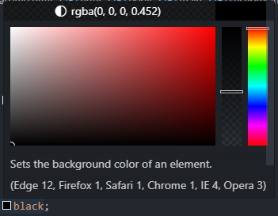

O primeiro parâmetro que declaramos em uma declaração box-shadow é o Deslocamento Horizontal Esse parâmetro nos permite manipular o quão para a direção esquerda orizontal (com valores - negativos) ou para a direção direita horizontal (com valores positivos) a sombra se localizara
Deslocamento Vertical
O segundo parâmetro que declaramos é o Deslocamento Vertical Esse parâmetro possui a lógica semelhante a do Deslocamento Horitontal, porém aqui o que muda é a direção; Valores negativos (-) deslocam a sombra para direção "pra cima da vertical" e valores positivos deslocam a sombra pra "baixo da vertical"
Espalhamento
O terceiro parâmetro que declaramos é o Espalhamento Esse parâmetro nos permite manipular o quão intenso ou forte será o espalhar das sombras, somente valores positivos podem ser declarados nesse parâmetro porque valores negativos eliminam totalmente o efeito de espalhamento de sombras
Cor
O último valor que declaramos é a tonalidade que a sombra terá
Shorthand
A shorthand para box-shadow segue a ordem Deslocamento Horizontal Deslocamento Vertical Espalhamento Cor
Box Shadow Outset e Inset
Além da box-sahdow padrão nós podemos desenvolver mais dois tipos de box-shadow a Outset (Para fora do elemento) e a Inset (Para dentro do Elemento)
Vamos falar sobre o tipo Outset primeiro, ouset se caracteriza por ser uma box shadow que fica para fora do elemento e os parâmetros de uma box shadow outset são os seguintes
Deslocamento Outset de x e y
Esses parâmetros atuam em conjunto sendo x(para direções a horizontal da sombra) sendo valores negativos referentes a parte esquerda da direção horizontal e valores positivos referentes a parte direita da horizontal e y(para direções a vertical da sombra) sendo valores negativos "para cima da vertical" e valores negativos "para baixo da vertical"
Blur ou Desfoque
Este é o terceiro parâmetro das box-shadows(tanto outset ou inset) e ele semelhante ao espahlamento permite que nós configuremos o quão forte o efeito de desfoque da sombra sera. somente valores positivos podem ser declarados (de 0px para não ter efeito de desfoque até 20px, que é o valor maximo e também o limite que o desfoque vai)
Visualização
O último parâmetro das box shadows(outset/inset) esse parâmetro simplemente nos permite configurar o quão grande(ou visivel) a sombra será para o cliente(usuário) também com valores limitamos com 0px sendo o valor que não altera o tamanho da sombra e vai até 20px que é o valor maximo que da o efeito maximo para o tamanho da sombra
Inset
Box shadow tipo Inset além de dar o efeito de sombra para dentro do elemento só possui uma única diferença entre ela e uma box shadow ouset veja as imagens
acima temos uma imgagem de como uma box shadow ouset é composta, comparea com a imagem abaixo e note a única diferença
acima temos uma imagem de como uma box shadow inset é composta, note que além de "inset" ser declarado afrente de todos os outros parâmetros o resto de sua composição é igual a de uma box shadow outset, o que muda de uma para a outra é o efeito e o "inset" esta afrente no caso de uma box shadow inset
Maçete para sombras
Outra coisa importante de se entender sombre sombras é que através da rgbalpha nós podemos deixar a sombra mais fraca sem alterar sua tonalidade TODA SOMBRA DEVE SER PRETA E TODA SOMBRA PODE E DEVE TER SUA TONALIDADE MANIPULADA ATRAVÉS DA rgba

Observe a imagem acima, note que a paleta de transparencia possui seu marcador da meta, isso é a uma manipulação de transparencia da cor preta, não altera sua tonalidade SOMENTE ALTERAR A TRANSPARENCIA, ASSIM GERANDO O rgba isso é o que vai deixar a sua sombra mais leve
Bordas Decoradas
As bordas dos elementos também podem ser manipuladas, sua forma, sua tonalidade, sua decoração enfim podemos alterar a borda para a forma que quisermos agora vamos a isso
Border Radius
A border radius é a manipulação dos cantos de borda de um elemento, as pontinhas, os estilos alteram as propriedades do canto esquerdo superior (top left radius) do canto direito superior (top right radius) do canto esquerdo inferiror (bottom left radius) e do canto direito inferior (bottom right radius) os valores declarados podem ser em formato de pixel ou porcentagem e assim como os estilos anteriores existem shorthands que nos ajudam a simplificar o desenvolvimento MAS AS SHORTHANDS DE BORDER RADIUS POSSUEM UMA ESTRUTURA DE APLICAÇÃO DIFERENTE DAS DOS ESTILOS ANTERIORES veja os exemplos
A imagem acima demonstra como é a estrutura de uma declaração do estilo border radius, agora foque na parte dos estilos onde se encontram as declarações de border radiuse note que, como dito anteriormente as declarações de direção não fazem o movimento circular que vimos nas declarações de padding, border, outline e margin. em border radius declaramos CANTO ESQUERDO SUPERIOR(TOP LEFT RADIUS) CANTO DIREITO SUPERIOR(TOP RIGHT RADIUS) CANTRO DIREITO INFERIOR(BOTTOM RIGHT RADIUS) CANTO ESQUERDO INFERIOR(BOTTOM LEFT RADIUS) essa é a ordem de declaração que fazemos quando estilizamos os cantos de borda de um elemento. Agora vamos ver um exemplo de como isso ficaria simplificado em uma shorthand
Olhe a imagem acima focando na declaração que seque ao lado do estilo border radius que tem a decoração azul, veja e ateste que os valores declarados são os mesmos do exemplo anterior, a diferença aqui é que a declaração foi simplificada, e devido a ordem de declaração da shorthand você sempre deve declarar os valores dos cantos superiores primeiro (canto esquerdo e canto direito) e quando for declarar os valores dos cantos inferirores começe pelo canto inferior direito primeiro (como se passasse do canto superior direito para o canto inferior direito) Agora vamos ao último exemplo que é referente a quando nós temos pares de valores iguais e queremos simplificar a declaração dos mesmos
A imagem acima demonstra duas coisas, a primeira é como que se declara pares de valores iguais e a outra é que esses pares ou par devem estar localizados em "Analogamente" um ao outro lembra das paletas de cores e do metodo de seleção Analógo? então para pares de border radius essa situação se aplica, você só vai declarar um par de valores na sua shorthand border radius se a localização desses pares for oposta, ou seja se o valor do estilo top left radius for igual a declaração do bottom right radius (note que visualmente ambos estaram opostos um ao outro, um no canto superior esquerdo e o outro no canto inferior direito) então você só declara o valor uma única vez, e o mesmo aconteçe para o canto superior direito e o canto inferior esquerdo